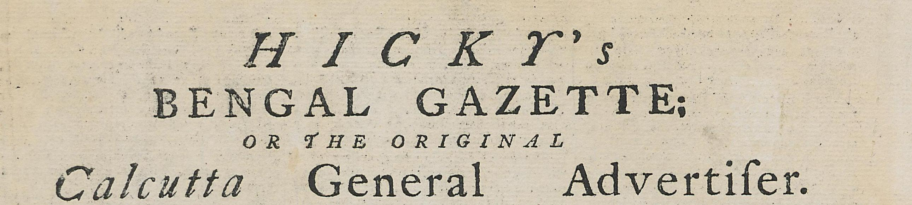

<div id="newsHeaderSection" class="row">
  <div class="col-2" id="dateSpace">
    <div id="dateText">
      29 January <br />
      1780
    </div>
  </div>
  <div class="col-8" id="headImageContainer">
    
  </div>
  <div class="col-2" id="imgSpace">
    
    <div id="imgName">
      James <br />
      Augustus <br />
      Hicky
    </div>
  </div>
</div>

<div id="aboutPaperContainer">
  <div id="aboutPaperText">
    ‘A weekly political and commercial newspaper, open to all parties but
    influenced by none’, the first newspaper to be printed in India
  </div>
</div>

<div id="learnMoreContainer">
  <div id="learnMoreText">
    Today’s newspaper talks about what India lost during the 200 years of
    British Raj.
  </div>
  <div><a>Learn more about newspapers</a></div>
</div>
